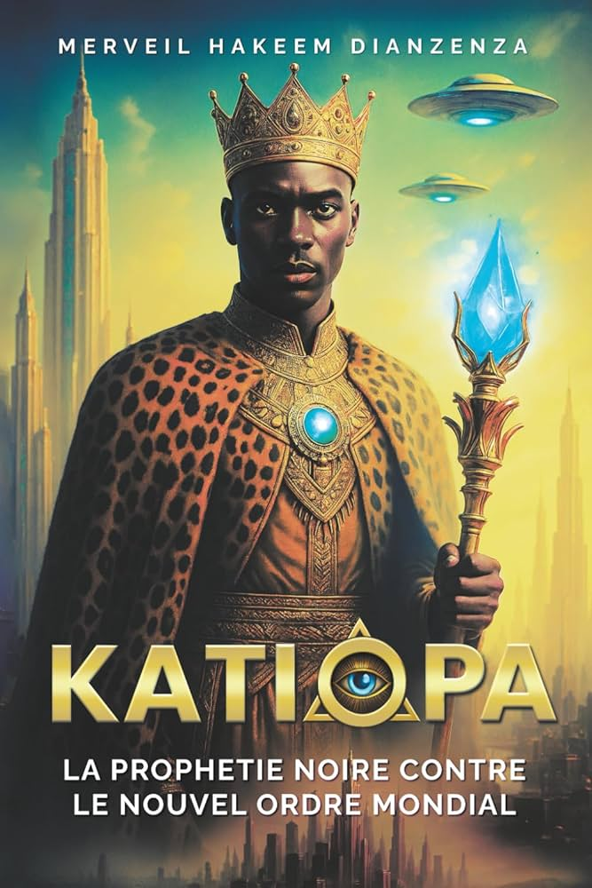
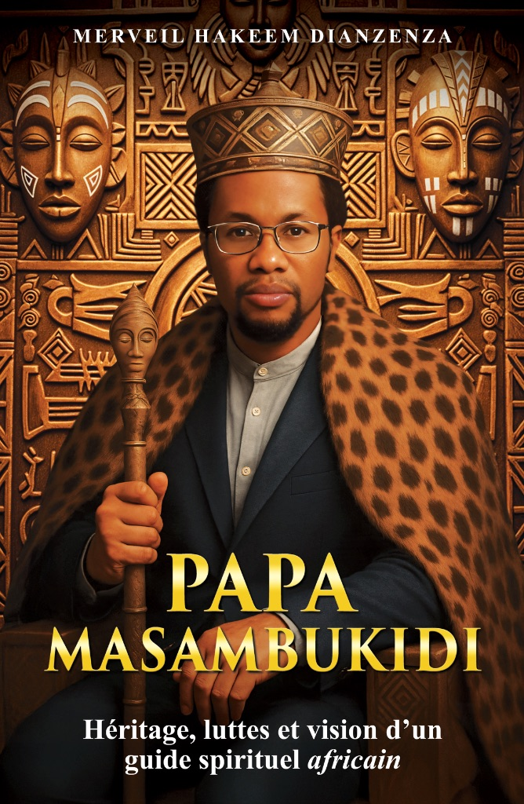
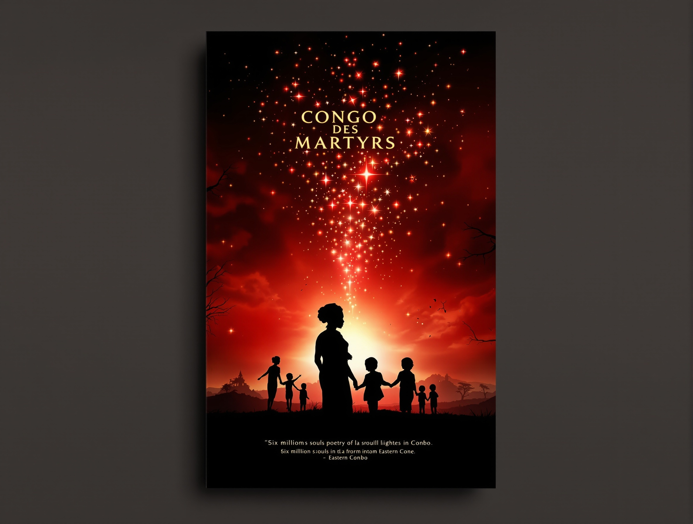
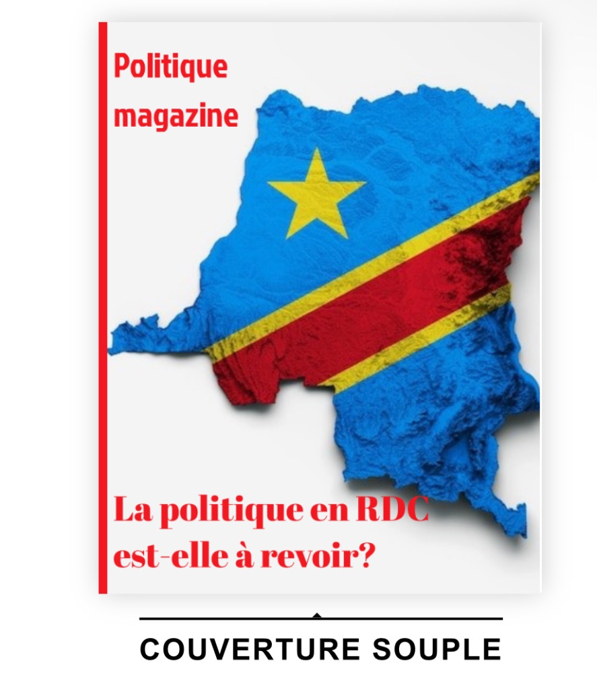

Les livres Hakvision — 3 œuvres publiées
Romans afrofuturistes, biographies et récits autobiographiques. Trois livres publiés, disponibles sur Amazon et Payhip. Des projets en préparation pour 2026.

KATIØPA — 634 pages. La saga phare d'Hakvision.
Saga phare — Disponible
KATIØPA — La Prophétie Noire

KATIØPA n'est pas une fiction. C'est une arme contre l'oubli. Un cri arraché aux profondeurs du Kongo. À travers l'odyssée de Kwatulendu, l'enfant-léopard porteur des dons divins, ce roman révèle une guerre invisible menée contre l'Afrique — trafic d'organes, transhumanisme racial, effacement spirituel. Mais un souffle ancien se lève pour rendre au continent son trône perdu.
« KATIØPA est un livre que l'on ne lit pas. On s'y confronte. Il n'est pas fait pour plaire, mais pour réveiller. »
— Merveil Hakeem DianzenzaCe que contient ce livre :
- Un glossaire trilingue (Français, Lingala, Kikongo)
- Des cartes sacrées et objets mystiques
- 15 annexes : complots médicaux, crimes historiques, chercheurs africains assassinés
- La question Mandela, décryptée sans filtre
Payez 7,49€ via Orange Money au +33 6 60 43 95 34 — puis envoyez un message sur WhatsApp pour recevoir votre fichier.
Biographie Officielle — Disponible
Papa Masambukidi — Héritage, luttes et vision

La biographie officielle du Roi Divin du Bassin du Congo, écrite par son chargé de protocole. Retrace le parcours exceptionnel de Papa Samuel Masambukidi II : de ses premières révélations spirituelles à son intronisation historique le 30 octobre 2025 à Kinshasa.
Un témoignage unique sur l'homme derrière le guide spirituel — ses luttes, sa vision et son héritage pour les générations futures.
Récit autobiographique — Disponible
Un Écrivain à Kinshasa — Chroniques d'un Retour
Les chroniques intimes d'un voyage initiatique entre exil parisien et racines congolaises. Entre deux mondes, deux cultures, deux réalités : le récit poignant d'une réconciliation avec ses origines et d'une renaissance identitaire.
« Dans les rues de Kinshasa, j'ai retrouvé des fragments de moi-même que Paris avait effacés. »
— Merveil Hakeem DianzenzaProduction littéraire — Salon du Livre Africain 2026
L'Œil de Kulala Ntumba Pasco
Présenté au Salon du Livre Africain le 21 mars 2026 aux côtés de KATIØPA, Un Écrivain à Kinshasa et Papa Masambukidi. Une production littéraire signée Hakvision.
Autres publications
Congo des Martyrs · Magazine Politique RDC

Congo des Martyrs
Essai historique. Une plongée dans l'histoire douloureuse du Congo et de ses héros oubliés. Devoir de mémoire pour les générations futures.
Commander par contact
Politique Magazine RDC 2023-2024
48 pages d'analyse politique de la RDC contemporaine. Élections, conflits à l'Est, richesses naturelles. PDF téléchargeable gratuitement.
Prochaines parutions
Bientôt disponibles — Rejoignez la liste
DIAKU : L'Antidote
Thriller médico-géopolitique. Le Congolais qui unit les Corées pour sauver l'humanité d'un virus apocalyptique.
KAMERUN 1945
Uchronie décoloniale. Et si Hitler avait choisi l'Afrique comme laboratoire du génocide ? Projet Prix Nobel de Littérature.

ZIKILA — 17 Réincarnations
Saga spirituelle. Un voyage à travers les âges et les dimensions de l'âme africaine, de l'Égypte ancienne au Congo moderne.

Double Identité
Roman sportif. Deux frères, un ballon, un destin. Football, famille et ambition dans un monde globalisé.
Abonnez-vous au canal WhatsApp pour recevoir les annonces en avant-première.
Rejoindre le canal Hakvision